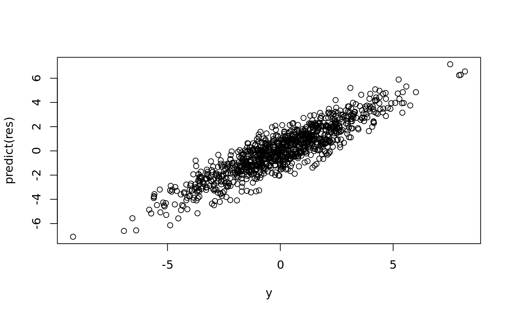

A minimal example
Matthew Stephens
April 11, 2018
mwe.RmdA minimal example
This fits a sparse linear regression model with up to \(L\) non-zero effects. Generally there is no harm in over-stating \(L\) (that is, the method is pretty robust to overfitting) except that computation will grow as \(L\) grows.
Here is a minimal example:
set.seed(1)
n = 1000
p = 1000
beta = rep(0,p)
beta[1] = 1
beta[2] = 1
beta[300] = 1
beta[400] = 1
X = matrix(rnorm(n*p),nrow=n,ncol=p)
y = X %*% beta + rnorm(n)
res = susieR::susie(X,y,L=10)
plot(coef(res))
